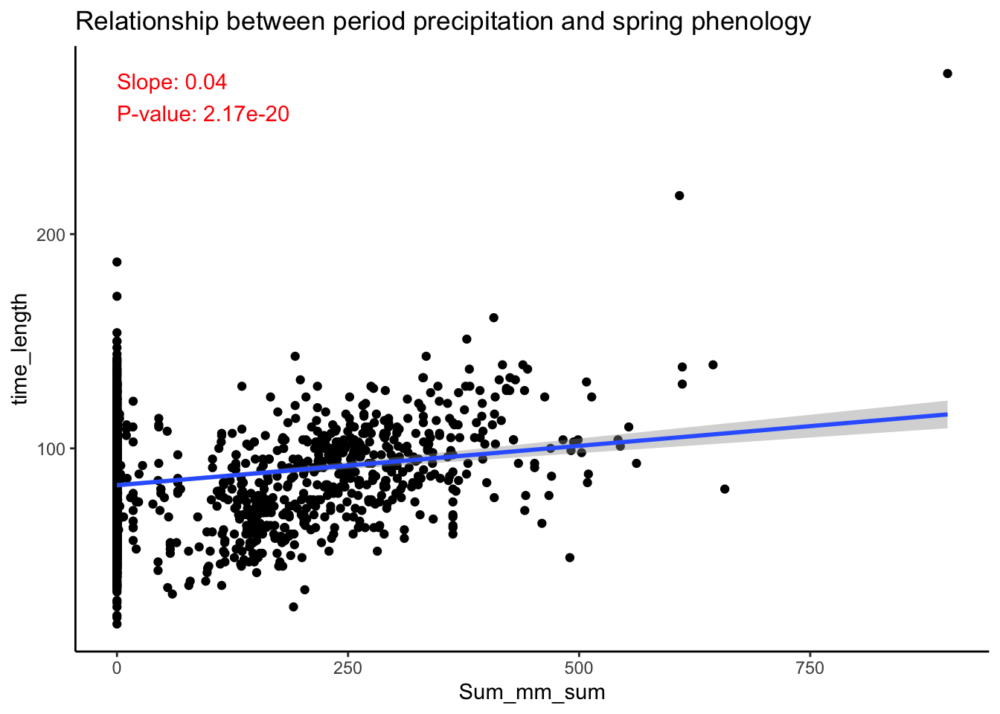
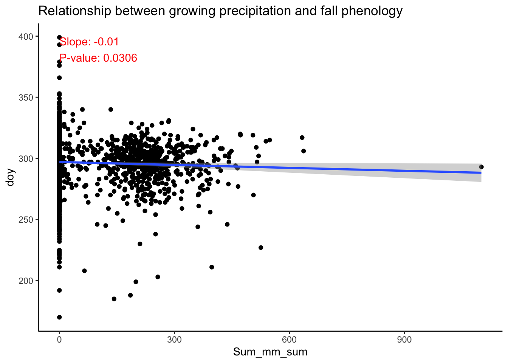

For exploratory analysis, I used the street tree in NYC, with the phenology information established by Yiluan. These trees are part of the whole inventory, covering only 14 genera and being sampled. I select the trees which are within 500-m buffer around the weather underground sites.
Reading layer `nybb_dissolved' from data source
`/Volumes/seas-zhukai/proj-urban-cooling/data/raw/NYC/boundary/nybb_dissolved.shp'
using driver `ESRI Shapefile'
Simple feature collection with 1 feature and 1 field
Geometry type: MULTIPOLYGON
Dimension: XY
Bounding box: xmin: 913175.1 ymin: 120128.4 xmax: 1067383 ymax: 272844.3
Projected CRS: NAD83 / New York Long Island (ftUS)
Code
ggplot() +geom_sf(data = nyboundary, fill ="grey") +geom_sf(data = wu_location, color ="blue", size =1) +geom_sf(data = points_in_buffer, color ="red", size =0.05) +theme_minimal()
Location of WU sites and trees
2. Creat the climate variable
2.1 Read and clean the WU data (based on GHCNd)
There are 4 raw daily variables selected, i.e. AvgTemp, HighTemp, LowTemp and Precipitation_sum (Sum_mm). I flagged the records which are unknown or questionable according to the methods applied by Global Historical Climatology Network daily GHCNd.
The seasonal variable is calculated for each site, year, and season. The season is defined as Winter: December(last year) to February, Spring: March to May, Summer: June to August, Fall: September to November.
# A tibble: 6 × 29
...1 id taxa site genus year start end direction thres doy
<dbl> <dbl> <chr> <chr> <chr> <dbl> <dbl> <dbl> <chr> <dbl> <dbl>
1 856615 187268 Carya glabra NY Carya 2017 11 173 up 0 11
2 856615 187268 Carya glabra NY Carya 2017 11 173 up 0.1 35
3 856615 187268 Carya glabra NY Carya 2017 11 173 up 0.2 55
4 856615 187268 Carya glabra NY Carya 2017 11 173 up 0.3 75
5 856615 187268 Carya glabra NY Carya 2017 11 173 up 0.4 87
6 856615 187268 Carya glabra NY Carya 2017 11 173 up 0.5 96
# ℹ 18 more variables: geometry <chr>, Site <chr>, Avg_HighTemp_fall <dbl>,
# Avg_HighTemp_spring <dbl>, Avg_HighTemp_summer <dbl>,
# Avg_HighTemp_winter <dbl>, Avg_AvgTemp_fall <dbl>,
# Avg_AvgTemp_spring <dbl>, Avg_AvgTemp_summer <dbl>,
# Avg_AvgTemp_winter <dbl>, Avg_LowTemp_fall <dbl>, Avg_LowTemp_spring <dbl>,
# Avg_LowTemp_summer <dbl>, Avg_LowTemp_winter <dbl>, Sum_Sum_mm_fall <dbl>,
# Sum_Sum_mm_spring <dbl>, Sum_Sum_mm_summer <dbl>, Sum_Sum_mm_winter <dbl>
3 Explore the relationship between temperature and phenology
3.1 Seasonal climate variables
I chose the Acer genus, 50% threshold as an example to plot the relationship. Overall, the warmer the winter/spring temperature, the earlier the spring phenology. The precipitation has no significant impact.
Code
seasonal_temp_doy <-readRDS("~/phenology-urban/data/proc/nyc/seasonal_doy.rds") %>%mutate(time_length = doy - start) %>%filter(direction =="up"& thres ==0.5& genus =="Acer")create_scatter_plot(data = seasonal_temp_doy, x_var ="Avg_AvgTemp_spring", y_var ="doy",title ="Relationship between seasonal temperature and spring phenology")create_scatter_plot(data = seasonal_temp_doy, x_var ="Avg_LowTemp_spring", y_var ="doy",title ="Relationship between seasonal temperature and spring phenology")create_scatter_plot(data = seasonal_temp_doy, x_var ="Avg_HighTemp_spring", y_var ="doy",title ="Relationship between seasonal temperature and spring phenology")create_scatter_plot(data = seasonal_temp_doy, x_var ="Sum_Sum_mm_spring", y_var ="doy",title ="Relationship between seasonal precipitation and spring phenology")create_scatter_plot(data = seasonal_temp_doy, x_var ="Avg_AvgTemp_winter", y_var ="doy",title ="Relationship between seasonal temperature and spring phenology")create_scatter_plot(data = seasonal_temp_doy, x_var ="Avg_LowTemp_winter", y_var ="doy",title ="Relationship between seasonal temperature and spring phenology")create_scatter_plot(data = seasonal_temp_doy, x_var ="Avg_HighTemp_winter", y_var ="doy",title ="Relationship between seasonal temperature and spring phenology")create_scatter_plot(data = seasonal_temp_doy, x_var ="Sum_Sum_mm_winter", y_var ="doy",title ="Relationship between seasonal precipitation and spring phenology")
Spring average temp.
Spring low temp.
Spring high temp.
Spring prcp. sum
Winter average temp.
Winter low temp.
Winter high temp.
Winter prcp. sum
Relationship between seasonal climate and spring phenology
Overall, the warmer the summer temperature, the later the fall phenology. Other relationship are not significant.
Code
seasonal_temp_doy <-readRDS("~/phenology-urban/data/proc/nyc/seasonal_doy.rds") %>%mutate(time_length = doy - start) %>%filter(direction =="down"& thres ==0.5& genus =="Acer")create_scatter_plot(data = seasonal_temp_doy, x_var ="Avg_AvgTemp_summer", y_var ="doy",title ="Relationship between seasonal temperature and fall phenology")create_scatter_plot(data = seasonal_temp_doy, x_var ="Avg_LowTemp_summer", y_var ="doy",title ="Relationship between seasonal temperature and fall phenology")create_scatter_plot(data = seasonal_temp_doy, x_var ="Avg_HighTemp_summer", y_var ="doy",title ="Relationship between seasonal temperature and fall phenology")create_scatter_plot(data = seasonal_temp_doy, x_var ="Sum_Sum_mm_summer", y_var ="doy",title ="Relationship between seasonal precipitation and fall phenology")create_scatter_plot(data = seasonal_temp_doy, x_var ="Avg_AvgTemp_fall", y_var ="doy",title ="Relationship between seasonal temperature and fall phenology")create_scatter_plot(data = seasonal_temp_doy, x_var ="Avg_LowTemp_fall", y_var ="doy",title ="Relationship between seasonal temperature and fall phenology")create_scatter_plot(data = seasonal_temp_doy, x_var ="Avg_HighTemp_fall", y_var ="doy",title ="Relationship between seasonal temperature and fall phenology")create_scatter_plot(data = seasonal_temp_doy, x_var ="Sum_Sum_mm_fall", y_var ="doy",title ="Relationship between seasonal precipitation and fall phenology")
Summer average temp.
Summer low temp.
Summer high temp.
Summer prcp. sum
Fall average temp.
Fall low temp.
Fall high temp.
Fall prcp. sum
Relationship between seasonal climate and fall phenology
In the mixed effect model, I treated the genus as a random effect.
Coefficents for model (fall phenology ~ summer climate)
Term
Estimate
Std. Error
t value
P-Value
(Intercept)
234.981
7.622
30.827566
0.00000
Avg_AvgTemp_summer
2.345
0.301
7.799551
0.00000
Sum_Sum_mm_summer
0.005
0.002
2.876526
0.00402
3.2 Event period climate
3.2.1 Create period temp/prcp variables
The seasonal climate variables use a fixed pre-season for every trees, not allowing heterogeneity within city. Also, the roughly divided season make it difficult to connect to phenology process, e.g. chilling and forcing accumulation. Therefore, some studies use varing preseason or optimal preseason.
Meng et al., 2020, Wang et al., 2021: The preseason was defined as the period from November 1st in the previous year to the time of SOS in the current year. (most fixed)
Meng et al., 2020, Yin et al., 2024: For each city, the period for which the absolute value of the partial correlation coefficient between SOS and Temp was highest was considered the optimal length of the preseason most relevant to SOS. (more flexible, cadidate time: 0 to 6 months prior to SOS, 5-day interval approach from January 1st to the average SOS date)
Most flexible: The period variable is calculated for each site, year, and growing period. The period is defined as the period between the start of the phenology event and the day of year when the tree reaches the event threshold.
# A tibble: 6 × 24
...1 id taxa site genus year start end direction thres doy
<dbl> <dbl> <chr> <chr> <chr> <dbl> <dbl> <dbl> <chr> <dbl> <dbl>
1 856615 187268 Carya glabra NY Carya 2017 11 173 up 0 11
2 856615 187268 Carya glabra NY Carya 2017 11 173 up 0.1 35
3 856615 187268 Carya glabra NY Carya 2017 11 173 up 0.2 55
4 856615 187268 Carya glabra NY Carya 2017 11 173 up 0.3 75
5 856615 187268 Carya glabra NY Carya 2017 11 173 up 0.4 87
6 856615 187268 Carya glabra NY Carya 2017 11 173 up 0.5 96
# ℹ 13 more variables: geometry <chr>, Site <chr>, start_date <date>,
# end_date <date>, LowTemp_mean <dbl>, LowTemp_count <int>,
# AvgTemp_mean <dbl>, AvgTemp_count <int>, HighTemp_mean <dbl>,
# HighTemp_count <int>, Sum_mm_sum <dbl>, Sum_mm_count <int>,
# time_length <dbl>
3.2.1 The current event period
I tried period_length (start of the event to the day when tree reaches the threshold) as well as day of year. However, one issue is that a later doy or a longer green-up period already corresponds to warmer weather in the current period.
Code
growing_temp_doy <-readRDS("~/phenology-urban/data/proc/nyc/growing_doy.rds") %>%filter(time_length !=0& direction =="up"& thres ==0.5& genus =="Acer")create_scatter_plot(data = growing_temp_doy, x_var ="AvgTemp_mean", y_var ="doy",title ="Relationship between period temperature and spring phenology")create_scatter_plot(data = growing_temp_doy, x_var ="LowTemp_mean", y_var ="doy",title ="Relationship between period temperature and spring phenology")create_scatter_plot(data = growing_temp_doy, x_var ="HighTemp_mean", y_var ="doy",title ="Relationship between period temperature and spring phenology")create_scatter_plot(data = growing_temp_doy, x_var ="Sum_mm_sum", y_var ="doy",title ="Relationship between period precipitation and spring phenology")create_scatter_plot(data = growing_temp_doy, x_var ="AvgTemp_mean", y_var ="time_length",title ="Relationship between period temperature and spring phenology")create_scatter_plot(data = growing_temp_doy, x_var ="LowTemp_mean", y_var ="time_length",title ="Relationship between period temperature and spring phenology")create_scatter_plot(data = growing_temp_doy, x_var ="HighTemp_mean", y_var ="time_length",title ="Relationship between period temperature and spring phenology")create_scatter_plot(data = growing_temp_doy, x_var ="Sum_mm_sum", y_var ="time_length",title ="Relationship between period precipitation and spring phenology")
doy ~ average temp.
doy ~ low temp.
doy ~ high temp.
doy ~ prcp. sum
period_length ~ average temp.
period_length ~ low temp.
period_length ~ high temp.

period_length ~ prcp. sum
Relationship between period climate and spring phenology
3.2.2 The previous period
The climate condition in the previous period. Temp in dormancy -> spring phenology. Temp in growing period -> fall phenology. Compared to current period, the climate of the previous event is not structurally inherently linked to the timing of the subsequent event, and it can help connect to the underlying mechanisms.
Code
growing_temp_doy <-readRDS("~/phenology-urban/data/proc/nyc/growing_doy.rds") %>%filter(thres ==0.5) %>%select(id, genus, year, direction, doy, time_length)growing_temp_doy_desc <-readRDS("~/phenology-urban/data/proc/nyc/growing_doy_desc.rds") %>%filter(thres ==0.5) %>%select(id, genus, year, direction, LowTemp_mean, LowTemp_count, AvgTemp_mean, AvgTemp_count, HighTemp_mean, HighTemp_count, Sum_mm_sum, Sum_mm_count) %>%mutate(join_year =case_when( direction =="up"~ year, direction =="down"~ year +1 ),join_direction =case_when( direction =="up"~"down", direction =="down"~"up" ) ) %>%select(-year, -direction)growing_doy_join <- growing_temp_doy %>%left_join(growing_temp_doy_desc, by =c("id"="id", "genus"="genus", "year"="join_year", "direction"="join_direction"))
For spring phenology, the warmer the dormancy period, the earlier the spring phenology. The warmer the dormancy period，the slower the green-up pace.
Code
growing_doy_spring <- growing_doy_join %>%filter(direction =="up") %>%filter(genus =="Acer")create_scatter_plot(data = growing_doy_spring, x_var ="AvgTemp_mean", y_var ="doy",title ="Relationship between growing temperature and spring phenology")create_scatter_plot(data = growing_doy_spring, x_var ="HighTemp_mean", y_var ="doy",title ="Relationship between growing temperature and spring phenology")create_scatter_plot(data = growing_doy_spring, x_var ="LowTemp_mean", y_var ="doy",title ="Relationship between growing temperature and spring phenology")create_scatter_plot(data = growing_doy_spring, x_var ="Sum_mm_sum", y_var ="doy",title ="Relationship between growing precipitation and spring phenology")create_scatter_plot(data = growing_doy_spring, x_var ="AvgTemp_mean", y_var ="time_length",title ="Relationship between growing temperature and spring phenology")create_scatter_plot(data = growing_doy_spring, x_var ="HighTemp_mean", y_var ="time_length",title ="Relationship between growing temperature and spring phenology")create_scatter_plot(data = growing_doy_spring, x_var ="LowTemp_mean", y_var ="time_length",title ="Relationship between growing temperature and spring phenology")create_scatter_plot(data = growing_doy_spring, x_var ="Sum_mm_sum", y_var ="time_length",title ="Relationship between growing precipitation and spring phenology")
doy vs. average temp.
doy vs. high temp.
doy vs. low temp.
doy vs. prcp. sum
period_length vs. average temp.
period_length vs. high temp.
period_length vs. low temp.
period_length vs. prcp. sum
Relationship between previous period climate and spring phenology
Coefficents for model (spring phenology ~ pervious period climate)
Dependent variable
Term
Estimate
Std. Error
t value
P-Value
doy
(Intercept)
121.770
0.614
198.443867
0e+00
doy
AvgTemp_mean
-0.921
0.051
-17.893020
0e+00
doy
Sum_mm_sum
0.005
0.001
5.329484
1e-07
time_length
(Intercept)
76.979
0.872
88.306877
0e+00
time_length
AvgTemp_mean
3.542
0.102
34.663215
0e+00
time_length
Sum_mm_sum
-0.041
0.002
-22.918665
0e+00
For fall phenology, the warmer the growing period, the later the fall phenology. The warmer the growing period，the faster the green-down pace.
Code
growing_doy_fall <- growing_doy_join %>%filter(direction =="down") %>%filter(genus =="Acer")create_scatter_plot(data = growing_doy_fall, x_var ="AvgTemp_mean", y_var ="doy",title ="Relationship between growing temperature and fall phenology")create_scatter_plot(data = growing_doy_fall, x_var ="HighTemp_mean", y_var ="doy",title ="Relationship between growing temperature and fall phenology")create_scatter_plot(data = growing_doy_fall, x_var ="LowTemp_mean", y_var ="doy",title ="Relationship between growing temperature and fall phenology")create_scatter_plot(data = growing_doy_fall, x_var ="Sum_mm_sum", y_var ="doy",title ="Relationship between growing precipitation and fall phenology")create_scatter_plot(data = growing_doy_fall, x_var ="AvgTemp_mean", y_var ="time_length",title ="Relationship between growing temperature and fall phenology")create_scatter_plot(data = growing_doy_fall, x_var ="HighTemp_mean", y_var ="time_length",title ="Relationship between growing temperature and fall phenology")create_scatter_plot(data = growing_doy_fall, x_var ="LowTemp_mean", y_var ="time_length",title ="Relationship between growing temperature and fall phenology")create_scatter_plot(data = growing_doy_fall, x_var ="Sum_mm_sum", y_var ="time_length",title ="Relationship between growing precipitation and fall phenology")
doy vs. average temp.
doy vs. high temp.
doy vs. low temp.

doy vs. prcp. sum
period_length vs. average temp.
period_length vs. high temp.
period_length vs. low temp.
period_length vs. prcp. sum
Relationship between previous period climate and spring phenology
Coefficents for model (fall phenology ~ pervious period climate)
Dependent variable
Term
Estimate
Std. Error
t value
P-Value
doy
(Intercept)
256.795
2.461
104.335144
0
doy
AvgTemp_mean
1.751
0.101
17.263620
0
doy
Sum_mm_sum
0.014
0.002
7.322015
0
time_length
(Intercept)
220.670
2.596
85.020263
0
time_length
AvgTemp_mean
-4.939
0.116
-42.521789
0
time_length
Sum_mm_sum
-0.061
0.002
-27.798872
0
4 Conclusion and next step
Within the city, the relationship between phenology and temperature is still significant.
The warmer the preseason temperature, the earlier the spring phenology.
The warmer the preseason temperature, the later the fall phenology.
The warmer the dormancy period，the slower the green-up pace. The warmer the growing period，the faster the green-down pace. (consistent results in lmer model)
The precipitation has no significant impact.
Next steps:
Juwon conducted research on the impact of climate change on urban trees, focusing specifically on changes in the start of the growing season in New York. He and Prof. Seto plan to expand this approach across the U.S., and he looks forward to potential collaborations.